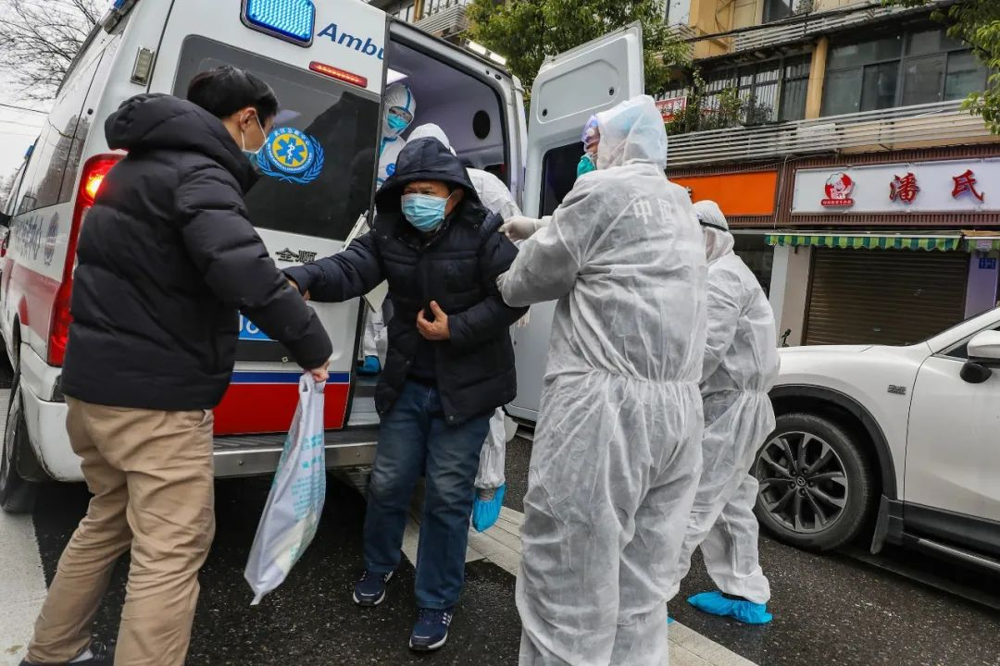
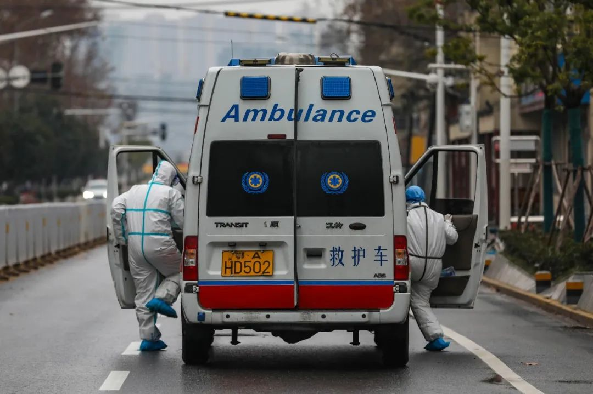
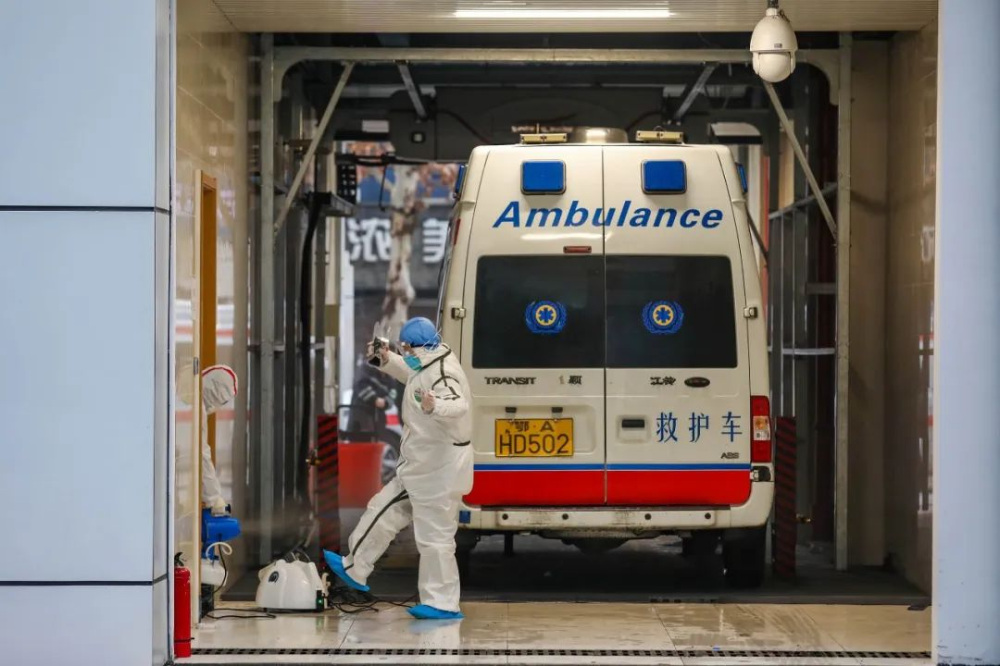
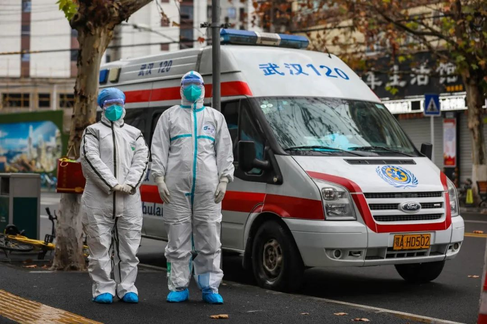

“重组”金银潭：疫情暴风眼的秘密
原文链接 备份链接 *************▲************* 2020年2月22日晚，武汉市金银潭医院，医护夫妇涂盛锦(左)和曹珊“以车为家”。 （新华社/图） 全文共10527字，阅读大约需要22分钟。 这里发生的许多事 …
2月15日，武汉下了一场大雪，天气极为寒冷，狂风足以把雨伞掀翻。而街上的行人极少，到了晚间，白雪掩盖了大半个武汉。这是封城后的第23天，每个人都在等待雪融冰消。
冰雪很快在第二天消失，但春天还没有来。我从武昌区去往青山区，见到的路障比行人还多。寒风依然萧瑟，在驾驶到一座长江大桥时，我看见两岸密集的高楼建筑，在雪融后变得明亮刺眼，像是一座钢铁森林。
武汉更加封闭了。数日以来，对新冠肺炎病人从提倡居家隔离，变成了“应收尽收”，每个区设立了方舱医院和隔离点，病人们各有各的归属。而对其他市民，管控也趋于严厉，从禁止驾车，到出入管理，再到彻底封闭社区。对疫情发起总攻的武汉，仿佛一个大型的军事化管理的校园。

但是，有的人必须出门。
“急救中心120”承担了一部分运输任务。我来到青山区的一个急救站，他们已经坚持了一个月的高强度工作。在最忙的时候，他们运输发热的疑似病人、确诊病人，以及其他有就医需求的病人。每天出车20多趟，24小时无休息。
即便在平时，急救车也是浓缩了“生老病死”的一个场景，疫情时期的它，更是为数不多观察武汉的一个移动窗口。通过这扇窗口，能看见特殊时期疫情导致的伤痛，也有反复发生的武汉的日常。
“我来给你介绍一下吧。”陶玲非常热情地招呼我，她是今天这班的医生。医生、护士、司机各1名，加上担架员2名，是急救车上的基本配置。她一边把短发利落地扎起，一边对我说：“虽然急救站是开在医院的，但我们人员是归武汉120管……”
话没说完，警铃大作，一串尖锐短促的“叮……”，像是上课铃。
它是一个信号：该出车了。其他4个人急忙从宿舍出来，急救站的站长也来到跟前，嘱咐说：“穿好防护服。”这话是对初来乍到的我说的，他们都已经熟练，动作不紧不慢，却在一分钟内变魔术似的穿好了。
防护服是件通身雪白的连体衣，要拉开上半身的锁链，提着它将双脚放进去，整个过程不能着地，不然会影响效果。接着，穿好袖子，把锁链合上。后来我才知道，这种一身白的防护服，质量不算好，好的防护服是有条纹和胶带的。但陶玲他们没有好的，只能用它面对现场的一切可能性。

不过，出这趟车的任务，不是接送病人，而是开一单死亡证明。我们来到一家民营的养老院。院长早就等在楼下，见到救护车赶紧招手。陶玲跳下副驾驶，从车里提出行李箱样大的心电仪，快步迈着台阶。护士提着另一箱仪器，在后面紧紧跟着。两位女性轻喘着气，但脚步从不放慢。
跟平常不同，如今她们有全身防护，挂着口罩、戴着护目镜，喘出的气很快在护目镜上液化，视线变得越来越模糊。我们跟着院长到了4楼的养老院，电梯打开是一道阴暗的长廊，彼此就更难看清楚了。去世的老人在左边第二间房，院长说：“他在昨天还好好的，突然就不行了。他没有发烧也不咳，不是那个病。”
“那个病”是说新冠肺炎，它现在是武汉人绕不过去的一个词。
在逝者对面仅1米的床上，躺着一位看上去有功能障碍的老人，他看见房间里全身防护的人，眼睛瞪得很大，显得有些激动。但他发不出声音，手也被布条捆在床杆上，只能小幅度的上下滑动，意义不明，或者根本没有意义。

1月26日，救护车抵达医院，张静协助患者下车。护士张静和司机老胡是武汉市第四医院的一个急救班组成员
在陶玲开死亡证明时，我回到了走廊观察。老人们没有任何防护措施，他们聚在有电视看的过道里，或者聚在走廊尽头有阳光的地方，除了电视机在发出声音，这条走廊非常安静。过道里的老人，不是真的在看电视，他们有的闭着眼睛，有的看着我，我看着他们，也没有话说。
开完死亡证明，我们回到了急救站。陶玲教我，先要洗手，把手套扔掉，再把防护服小心翼翼地脱下来，它的质料很薄，可千万别弄破了，毕竟是要用一天的。脱下来的防护服挂在急救车里，车内的紫外线可以消毒。
约半小时后，我们再次出车，这次是运输一位腹痛患者，疑似有肾脏结石。急救车将他送到了普仁医院的急诊科。
“情况明显好转了。”陶玲看着我，她清楚我来访的目的，这一趟没有遇上。她说，救护车现在运输的病人，很少有发热的了，因为发热病人一般由社区登记，再由社区对接隔离点、方舱医院或者定点医院。“早一周来的话，你能看到的，全部是发热病人，而且几乎都是新冠肺炎患者。”

司机李林对此记忆深刻，他说，在刚过年的几天，病人太多但救护车太少，他们常常接到十几二十公里外的单子。到了医院，大厅、过道里都是病人，太多的人等待核酸检测来确诊，否则无法得到床位。
然而，核酸试剂盒与床位都太少了，由此形成了一个“怪圈”：得不到确诊和床位的病人们，大量而重复地来医院排队，反而进一步加剧了病毒传播。
据央视2月17日报道，国家卫健委官员接受采访时说，在武汉初期，很多病例没有得到及时救治。“重症病人从发病到住院的时间平均9.84天，说明有10天的时间变成了移动的传染源。”
官方在后来加大了防控力度，相继实行分级诊疗等制度，社区成为病人与医院之间的“把关人”。对李林来说，最直接的感受是，需要救护车运输的病人变少了，现在每天的出车量是10趟多一点，接近平时的每天7、8趟。
病人也以非新冠肺炎患者为主，事实上，在武汉越发严格的管制措施下，新冠肺炎病人还拥有社区的通道，而其他病人如在“孤岛”，更需要救护车来运输。
120急救车穿过鹦鹉洲长江大桥
李林没能说完他的话，烟才刚刚点燃，警铃又响了。陶玲跑到门口叫他：“出车了！”她特地又对我喊道：“这次是个发热病人！”
不到10分钟，救护车开到了丹青苑小区的门口，病人是个70多岁的老爷子，他被老伴搀扶着徐徐走来。不过，他对医生说：“我没有发烧。”
他不想去定点医院。
陶玲做好了全身防护，把他扶上了救护车。她没多说什么，拿出体温计给老爷子，叫他量一量。老爷子起初不肯，强调自己没有发烧，陶玲解释说：“不是说你有那个病，是现在的情况下，每个病人都要量体温。如果你发烧了，去急诊科也没用，他们不会收。去了也要量体温的。”
老爷子听了，只好量起体温，陶玲两次嘱咐说：“夹紧、夹紧。”体温量出来是37.6摄氏度，属于低烧。老爷子和他老伴很纳闷儿，说刚刚量时都没烧。陶玲没争什么，她甩了甩体温计，安慰老爷子说：“没事啊，没事，我们再量一次。”结果依然是37.6度低烧。

但是，两位老人执意不去定点医院，他们怕去了被交叉感染。救护车最后开到了普仁医院的发热门诊，两位老人进去挂号了。回去站点的路上，陶玲和李林相视笑了笑，他们见多了这种情况。
“病人不说实话，是怕我们不送他了。有的是侥幸心理，觉得自己不是新冠肺炎，很排斥去定点医院。”陶玲解释说。
出了4趟车后，时间将近中午1点，站长端出了盒饭。
陶玲和护士两位女性在办公室，边谈笑边吃饭，不一会儿饭盒见底。陶玲看到我的碗里还有少量饭菜，突然不好意思起来，捂着嘴笑说：“我是不是吃太快了？”她又赶紧辩解：“没办法嘛，我们干这一行，平时2分钟就吃完了。”
确实，在急救站里，做事都是争分夺秒。午饭过后，5个人很快回到宿舍。他们要抓紧时间休息，因为在这一天的24小时里，他们都要准备着随时出发。
他们这天的运气不错，午休了1个小时，也睡得很沉。直到下午2点，铃声终于响起。众人被惊醒，很快在两三分钟内集合完毕。他们还不知道，即将出的这趟车，是近些天里最难的一趟。

1月26日，一天的工作临近结束，张静和老胡来到武汉市急救中心的消毒点为车辆和自己彻底消毒
病人在武钢医院。没过多久，救护车开到了院区。是位71岁的男性老人，躺在一张不知哪儿来的床上，两名男性家属陪护着他。他们显然是被拒收了，只能在发热门诊的门前、医院绿化带的边上，等着救护车给他们一个去处。
陶玲接过诊断报告，一看：“陈XX，男……考虑为：细菌性肺炎。”
他罹患了细菌性肺炎，而新冠肺炎是“病毒性肺炎”。武钢医院在2月15日被征用为定点医院了，不能再收治他。然而，他的情况十分危急，血象指标达到了19000（正常人在8000~9000）。他躺在床上，呼吸都非常吃力，疼痛中发出浑浊的声音，眼睛无法睁开，没有说话能力。
一位家属告诉陶玲：“武钢现在只收病毒肺炎了，快把我爸转到普仁医院去。”
陶玲明白，事情没那么简单。
武钢医院是不能收治了，但普仁医院也不能说去就去。现在全力抗“疫”时期，收治非新冠病人的医院太少，床位一定很稀缺。陶玲对病人家属说：“到时候还不能收治，就连这张露天的床也没有了。他情况又这么严重，站都站不了，怎么排队？等得及吗？”

家属坚持要先转出去，病人儿子陈章明说：“这里肯定收不了了，何况他一个细菌性肺炎的，在这里交叉感染了怎么办？”
做了决定后，担架员将病人抬上了救护车，一路开到普仁医院的急诊科。
和陶玲的猜测一样，来对接的医生摆手，表示收不了。她对陶玲和家属说：“现在一个床位也没有了。”她指了指旁边的病区，说：“不信我可以把门打开给你们看，我们这里吸氧的地方都没有了。这里还有疑似新冠肺炎的患者，现在还转不出去。”
接着，两边陷入了无用的对话。陶玲拿出诊断报告，说病人情况很危急，但又不是新冠肺炎，只能来普仁医院了。家属试图“软硬兼施”，说要打“市长热线”。
女医生仍是摆手，重复地说“收不了”。她说：“我们（医院）没有床啊。我病区这里还有两具尸体，就放在那里，不知道什么时候能拖走、把床位腾出来。现在殡仪馆都排了很长的队。我估计你们病人也等不了这么长时间。听明白没有？”
她接着说，排除了新冠肺炎的，还可以去同济、协和、湖北省人民医院，它们也收非新冠肺炎的病人。

家属似乎看到了希望，问：“它们会不会也没有床位？”
医生回答说：“有可能，你试一下啊。不试一下连希望都没了。”
白跑一趟后，在下午3点半，救护车来到了湖北省人民医院。他们把病人留在车上，陶玲和家属先到急诊科咨询。但是，希望又落空了。
其实，走入省人民院的急诊科时，答案就很明显了。人满为患，前台大厅都摆满了床位，把空间切割成了狭窄的过道。病人和家属来来往往，每个床边都拥挤不堪。前台的护士对陶玲说：“你自己看，现在真住不了院，在这里的病人也在排队等，现在连这儿都住不下了。”
护士说的没错，尽管大厅、走廊，还有部分科室，都临时改成了病房，床也尽可能地多铺了，但仍然不够。还有病人在等待，还有新的病人想加入。
家属试着软磨硬泡，把危急的情形告诉护士。但护士在看了单子后，更加坚定地说：“收不了。”她解释说，病人的问题在肺部，有可能是新冠肺炎，只有完全排除了新冠肺炎，急诊科才能收治。

武钢医院出具了报告，诊断为“细菌性肺炎”，这还不够吗？
前台护士表示，不够。她对家属说：“你要去做两次核酸检测，要两次都是阴性。再去做CT检查，判断没有问题，才能完全排除新冠肺炎。”在这套流程走完后，病人才能被急诊科收治。
家属决定再试一次，下午5点左右，救护车再次载着他们，往同济医院开去。
一路奔波了4小时，尽管病人的体征参数没有恶化，但体力过度透支，两次呕吐出黑色的液体。他似乎极为痛苦，在担架床上费力地翻动着，却只能一次次把枕头推下床。病人儿子很疲惫了，他哀求道：“老爹，你不要扳了，医院不收能怎么办？你又不是得的那种病（新冠肺炎）。”
同济医院也拒绝了收治，理由直接得多。急诊科的医务人员说，武汉现在实行分区管理，病人一家是在青山区，但同济医院是在硚口区，“跨了区的，不能办理住院”。最后，病人和家属又回到了起点：武钢医院。陶玲对医务人员解释了前后因果，尽管还是不能住院，但得到了一个留观的床位。
出了这趟车后，每个人都有些疲惫，陶玲回到宿舍关起门休息。到她决定出门买泡面时，天已经全黑了。
（文中陶玲、李林为化名）
原文链接 备份链接 *************▲************* 2020年2月22日晚，武汉市金银潭医院，医护夫妇涂盛锦(左)和曹珊“以车为家”。 （新华社/图） 全文共10527字，阅读大约需要22分钟。 这里发生的许多事 …
原文链接 备份链接 新增和现有病例基数连续回落几天后，武汉各大医院终于度过最艰难的时刻。眼下，如何降低重症患者死亡率成为各大重症定点收治医院的首要任务。药物、血浆、ECMO等治疗手段已经纷纷进入临床应用，但面对捉摸不定的新冠病毒，医生们 …
原文链接 备份链接 致敬所有奋战在一线的医护人员。 武汉的一月，气温总在10度以下，阴雨天气占了大半。2020年1月14日那天，不仅有雨，还有三到四级的风。武汉协和东西湖医院重症监护室（ICU）主任袁海涛和他的同事，推着一个因病毒性肺炎插 …
原文链接 备份链接 “很多人去世。”袁鸣说，“但他们和我们都尽了最大的努力。” 2月15日上午，刚刚经历了一夜冬日雷雨和大风的武汉大雪纷飞，袁鸣早早进入病房查房。依次穿上蓝色隔离服、白色防护服，戴上手术帽、面屏和护目镜，套上手套和脚 …
原文链接 备份链接 后来我回想，也挺后怕的。我接诊阿姨的时候，给她查体，她对着我咳嗽过。 口述 | 宋亚锋 整理 | 黄 祺 “突然听到一个消息，心情很不好，内心很恐惧，虽然根本不认识，但感觉很难过，一路走好，希望你的家人能够渡过难 …